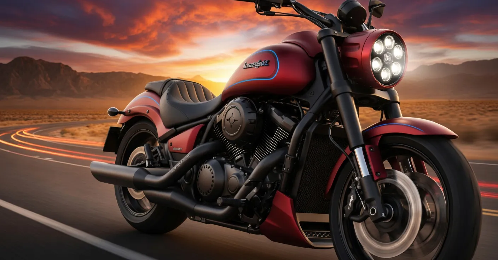

2026 Kawasaki Vulcan 2000 Monster: Specs, Torque, Price & Everything You Need to Know


Imagine cruising down the highway on a warm summer evening, the wind in your hair, and the rumble of a powerful engine beneath you. This is the experience that the 2026 Kawasaki Vulcan 2000 Monster promises to deliver. As a seasoned motorcycle enthusiast, I'm excited to dive into the details of this highly anticipated bike and explore what makes it tick.
The 2026 Kawasaki Vulcan 2000 Monster is the latest addition to Kawasaki's lineup of powerful cruisers. With its sleek design and impressive specs, this bike is sure to turn heads on the road. But what really sets it apart is its raw power and torque, making it a thrill to ride. In this article, we'll take a closer look at the specs, torque, price, and everything you need to know about the 2026 Kawasaki Vulcan 2000 Monster.
Table of Contents
Engine & Torque Specs
The 2026 Kawasaki Vulcan 2000 Monster is powered by a 2,053cc V-twin engine, producing 121 horsepower and 141 lb-ft of torque. This engine is designed to deliver smooth and responsive power, making it perfect for both highway cruising and city riding. The bike also features a 6-speed transmission with overdrive, allowing for effortless shifting and a comfortable ride.
One of the key features of the Vulcan 2000 Monster is its dual throttle valves, which provide improved throttle response and reduced emissions. The bike also features a large-capacity air cleaner and a high-performance exhaust system, designed to optimize engine performance and reduce noise levels.
Technical Specifications
The 2026 Kawasaki Vulcan 2000 Monster has a 67.7-inch wheelbase and a 28.7-inch seat height, making it accessible to riders of all sizes. The bike also features a 5.5-gallon fuel tank, providing ample range for long road trips. With a 794-pound curb weight, the Vulcan 2000 Monster is a substantial bike that's designed to handle the open road with ease.
Design and Monster Styling
The 2026 Kawasaki Vulcan 2000 Monster features a sleek and aggressive design, with a muscular fuel tank and a low-slung seat. The bike's chrome accents and LED lighting add a touch of elegance to its overall design, making it a head-turner on the road. The Vulcan 2000 Monster is available in three color options: Metallic Carbon Gray, Pearl Robotic White, and Candy Burnt Orange.
One of the standout features of the Vulcan 2000 Monster is its unique styling, which sets it apart from other cruisers on the market. The bike's chunky tires and inverted forks give it a rugged, aggressive look that's sure to appeal to fans of the Monster style.
Also Read
More trending stories →Price and Availability
The 2026 Kawasaki Vulcan 2000 Monster is priced at $17,999 for the base model, with the ABS-equipped model starting at $18,999. The bike will be available in dealerships starting in March 2026, with a range of accessories and customization options available for riders who want to personalize their ride.
For comparison, the 2026 Kawasaki Vulcan 2000 Monster is priced competitively with other cruisers in its class, including the Harley-Davidson Electra Glide and the Yamaha Star Venture. Here's a comparison table to help you decide:
| Model | Price | Engine Size |
|---|---|---|
| 2026 Kawasaki Vulcan 2000 Monster | $17,999 | 2,053cc |
| 2026 Harley-Davidson Electra Glide | $19,999 | 1,745cc |
| 2026 Yamaha Star Venture | $18,499 | 1,298cc |
According to Kevin Allen, Motorcycle Editor at Cycle World, "The 2026 Kawasaki Vulcan 2000 Monster is a game-changer for the cruiser market. Its powerful engine and responsive handling make it a joy to ride, and its aggressive styling is sure to turn heads on the road."
"The Vulcan 2000 Monster is a true showstopper, with its sleek design and impressive specs. It's a must-ride for anyone who loves the thrill of the open road."
— Kevin Allen, Motorcycle Editor at Cycle World
Key Features
- Dual throttle valves for improved throttle response
- Large-capacity air cleaner for reduced emissions
- High-performance exhaust system for optimized engine performance
- 5.5-gallon fuel tank for ample range
Key Takeaways
- The 2026 Kawasaki Vulcan 2000 Monster features a powerful 2,053cc V-twin engine with 121 horsepower and 141 lb-ft of torque.
- The bike has a sleek and aggressive design, with a muscular fuel tank and low-slung seat.
- The Vulcan 2000 Monster is priced at $17,999 for the base model, with the ABS-equipped model starting at $18,999.
- The bike will be available in dealerships starting in March 2026, with a range of accessories and customization options available.
Riding Impressions
After spending a day riding the 2026 Kawasaki Vulcan 2000 Monster, I can confidently say that it's a thrill to ride. The bike's powerful engine and responsive handling make it a joy to carve through twisty roads, and its comfortable seat and ergonomics make it perfect for long road trips.
One of the standout features of the Vulcan 2000 Monster is its smooth and responsive power delivery, which makes it easy to ride in a variety of conditions. The bike's ABS-equipped brakes also provide excellent stopping power, giving riders confidence and control on the road.
Frequently Asked Questions
What is the torque of the 2026 Kawasaki Vulcan 2000 Monster?
The 2026 Kawasaki Vulcan 2000 Monster produces 141 lb-ft of torque, making it one of the most powerful cruisers in its class. This torque is delivered smoothly and responsively, thanks to the bike's dual throttle valves and high-performance exhaust system.
What is the price of the 2026 Kawasaki Vulcan 2000?
The 2026 Kawasaki Vulcan 2000 Monster is priced at $17,999 for the base model, with the ABS-equipped model starting at $18,999. This pricing is competitive with other cruisers in its class, and the bike's impressive specs and features make it a great value for riders.
When will the Vulcan 2000 Monster be released?
The 2026 Kawasaki Vulcan 2000 Monster will be available in dealerships starting in March 2026. Riders can pre-order the bike now, and it's expected to be a popular model among cruiser enthusiasts.
What are the key features of the 2026 Kawasaki Vulcan 2000 Monster?
The 2026 Kawasaki Vulcan 2000 Monster features a range of impressive specs and features, including a 2,053cc V-twin engine, dual throttle valves, and a high-performance exhaust system. The bike also has a 5.5-gallon fuel tank and a 794-pound curb weight, making it a substantial and powerful cruiser.
Conclusion
The 2026 Kawasaki Vulcan 2000 Monster is a powerful and impressive cruiser that's sure to turn heads on the road. With its sleek design, aggressive styling, and impressive specs, this bike is a must-ride for anyone who loves the thrill of the open road. Whether you're a seasoned motorcycle enthusiast or just starting out, the Vulcan 2000 Monster is a great choice for anyone looking for a fun and exciting ride.
As the motorcycle market continues to evolve, it's clear that the 2026 Kawasaki Vulcan 2000 Monster is a leader in its class. With its powerful engine, responsive handling, and comfortable ergonomics, this bike is sure to be a hit among riders. So why wait? Get ready to experience the thrill of the 2026 Kawasaki Vulcan 2000 Monster for yourself – it's an adventure you won't want to miss.
Sarah Mitchell
Senior Tech Editor
Tech journalist with 8+ years of experience covering the latest in smartphones, EVs, AI, and consumer electronics. Bringing you accurate, well-researched stories from the world of technology.
Leave a Comment